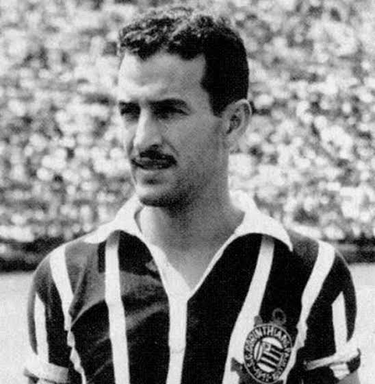

Os Maiores Artilheiros de Todos os TemposConfira o ranking dos jogadores que mais balançaram as redes com a camisa do Corinthians.
 Estatísticas e Curiosidades InterativasClique nos tópicos abaixo para expandir as informações. ► Quem tem a melhor média de gols da história?
Apesar de Cláudio ter mais gols no total, o dono da maior média de gols é Teleco. Ele marcou impressionantes 256 gols em apenas 249 jogos, possuindo uma média superior a 1 gol por partida! ► Maior artilheiro do Século XXI (Anos 2000 em diante)
Considerando apenas o século 21, o maior artilheiro do clube é Jô, cria do Terrão, que ultrapassou a marca de 60 gols em suas diferentes passagens pelo clube. |